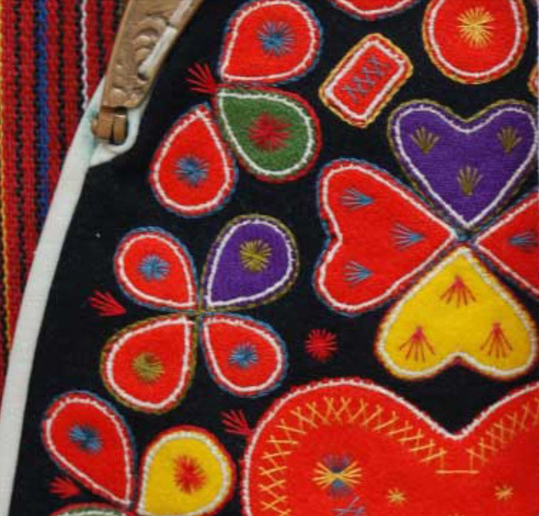

Det här är
Älska Älvdalen är ett årligt förekommande evenemang för hela dalen — en vecka som samlar oss kring det vi är stoltast över.

Varför vi firar
I vårt älskade Älvdalen värnar vi om våra rötter. Vi talar samma unika språk som våra förfäder. Vi bär folkdräkt med stolthet, vi jagar och odlar i vår välbevarade natur. Och än idag strövar djuren fritt i våra grönskande fäbodar — precis som de alltid gjort. Tradition ligger oss varmt om hjärtat.
Älska Älvdalen är vårt sätt att fira det tillsammans: en vecka av aktiviteter, möten och minnen, öppen för alla som bor här, kommer hit eller bär dalen i hjärtat var de än befinner sig.
Det här bygger vi på
Tradition
Vårt språk, vår folkdräkt och vårt sätt att bruka naturen har följt oss i generationer. Tradition är inte nostalgi hos oss — det är hur vi lever idag.
Stolthet
Våra djupa skogar, porfyrrika berg och rika fiskevatten. Vårt anrika språk och vår musik. Det kreativa folket som lever och verkar här — allt det är vi stolta över.
Gemenskap
Älvdalen är en plats där man umgås — att tillsammans skratta, njuta och skapa oförglömliga minnen. I vår gemenskap är alla välkomna och här kan alla känna sig trygga.
Vill du vara med?
Älska Älvdalen görs av och för dalen. Vill du engagera dig, föreslå en aktivitet eller bara veta mer om vad som är på gång — hör av dig, vi svarar gärna.
Till kontaktsidan